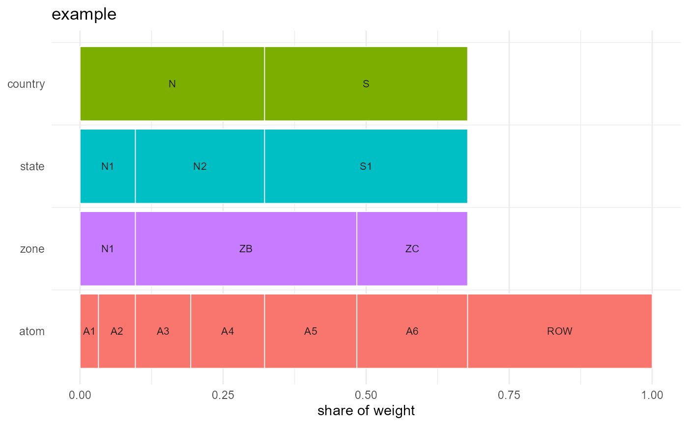

Draws the hierarchy as an icicle: one row per geoframe, coarsest at the top, each region's width proportional to its share of the weight.
Usage
geoscale_autoplot(
x,
type = c("icicle", "stack"),
weight = NULL,
fill = c("geoframe", "region"),
label = TRUE,
view = NULL,
angle = NULL,
ratio = NULL,
shear = 0.45,
depth = 0.55,
gap = NULL,
rotate = 0,
direction = c("up", "down"),
precision = 0,
data = NULL,
z = NULL,
rule = "weighted_mean",
labels = NULL,
palette = "G",
colour = "grey35",
linewidth = 0.2,
frame = NULL,
frame_fill = NA,
connectors = FALSE,
...
)
# S3 method for class 'Geoscale'
autoplot(x, ...)Arguments
- x
A
Geoscale.- type
"icicle"(default) or"stack"— the axonometric stacked-maps view: one sheared map plane per geoframe, coarsest on top, the same atoms dissolved at each resolution. Requires attached geometry (and the sf package);weight/fill/labelapply to the icicle only.- weight
Weight column determining widths.
NULLuses the default.- fill
What to colour by:
"geoframe"or"region".- label
Draw region codes on the rectangles.
- view
type = "stack"only: a predefined point of view –"oblique"(the shear/depth default),"top-down","cavalier","cabinet","military","isometric","dimetric","trimetric", or"perspective"(receding planes shrink).- angle, ratio
type = "stack"only: oblique view by angle (degrees of the receding axis) and foreshortening ratio –e2 = ratio * (cos(angle), sin(angle)). Overridden byview.- shear, depth, gap
type = "stack"only: raw receding-axis components (e2 = (shear, depth); used when neitherviewnorangle/ratiois given) and the vertical spacing between planes.gap = NULL(default) spaces planes almost touching, with a slight overlap.- rotate
type = "stack"only: in-plane rotation of each plane (degrees, counter-clockwise) – point North where you want it.- direction
type = "stack"only:"up"(default) stacks the coarsest geoframe on top;"down"puts it at the bottom.- precision
type = "stack"only: GEOS precision for the dissolve, forwarded togeoscale_geometry(). Default0= off.- data, z
Colour the figure by a value instead of by structure: works for BOTH types – the icicle fills each band's rectangles (overriding
fill), the stack fills each plane.datamust carry the atom geoframe as a key column plus the value column named byz; every coarser geoframe gets the value recast up withrecast_geoscale()(seerule), so the whole figure shares one continuous fill scale (legend title vialabs(fill = )).- rule
With
data: aggregation rule used to recastzfrom the atoms to each coarser geoframe ("weighted_mean"default; seerecast_geoscale()). The icicleweightargument doubles as the weight column for"weighted_mean"(NULL= the geoscale's default weight).- labels
type = "stack"only: character vector of geoframes whose regions get their display names (the@meta$labelscolumn, falling back to codes) drawn on the plane.NULL(default) = none.- palette
type = "stack"only: viridis palette option ("A".."H") for the plane fill. Default"G".NULLadds no fill scale at all, so you can supply your own – e.g.energypal::scale_fill_energy_b()for the Global Wind Atlas colours on their absolute breaks.- colour, linewidth
type = "stack"only: region border colour and width, recycled across the planes (socolour = c("white", "grey40", "white")styles one plane per entry). Defaults"grey35"and0.2– ggplot2's own sf polygon border.- frame
type = "stack"only: draw each plane's outline (the footprint box run through the same projection) as a guide – curved shapes are much easier to read in oblique views with the plane edges visible.TRUEuses"grey80", a colour string uses that colour,NULL(default) draws no frames.- frame_fill
type = "stack"only: fill for the plane sheets. Best mostly transparent, e.g.frame_fill = ggplot2::alpha("grey60", 0.12)– the panes then read as glass sheets and slightly dim what lies beneath them. Setting a fill draws the frames even withoutframe;NA(default) = no fill.- connectors
type = "stack"only: draw dashed lines joining the corresponding frame corners of adjacent planes – the vertical guides of the stack.TRUEuses the frame colour, a colour string picks its own; defaultFALSE.- ...
Unused.
Details
This is the structure plot — it shows the Geoscale itself and needs no
geometry. For a map of values over regions, see geoscale_plot().
Also registered as an autoplot() method, so ggplot2::autoplot(gs) works
when ggplot2 is installed.
Examples
if (requireNamespace("ggplot2", quietly = TRUE)) {
geoscale_autoplot(geoscale_example())
}
